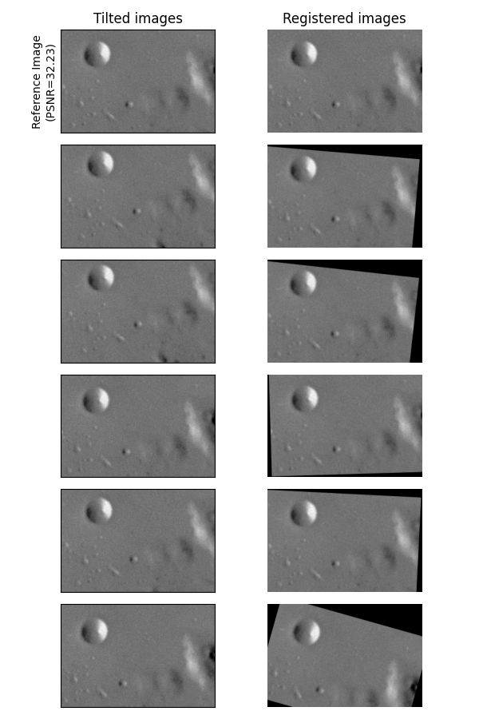
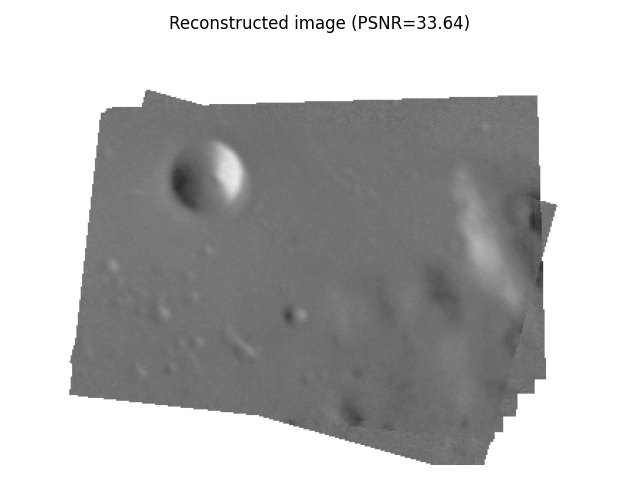

Note
Go to the end to download the full example code or to run this example in your browser via Binder
Assemble images with simple image stitching#
This example demonstrates how a set of images can be assembled under the hypothesis of rigid body motions.
from matplotlib import pyplot as plt
import numpy as np
from skimage import data, util, transform, feature, measure, filters, metrics
def match_locations(img0, img1, coords0, coords1, radius=5, sigma=3):
"""Match image locations using SSD minimization.
Areas from `img0` are matched with areas from `img1`. These areas
are defined as patches located around pixels with Gaussian
weights.
Parameters
----------
img0, img1 : 2D array
Input images.
coords0 : (2, m) array_like
Centers of the reference patches in `img0`.
coords1 : (2, n) array_like
Centers of the candidate patches in `img1`.
radius : int
Radius of the considered patches.
sigma : float
Standard deviation of the Gaussian kernel centered over the patches.
Returns
-------
match_coords: (2, m) array
The points in `coords1` that are the closest corresponding matches to
those in `coords0` as determined by the (Gaussian weighted) sum of
squared differences between patches surrounding each point.
"""
y, x = np.mgrid[-radius : radius + 1, -radius : radius + 1]
weights = np.exp(-0.5 * (x**2 + y**2) / sigma**2)
weights /= 2 * np.pi * sigma * sigma
match_list = []
for r0, c0 in coords0:
roi0 = img0[r0 - radius : r0 + radius + 1, c0 - radius : c0 + radius + 1]
roi1_list = [
img1[r1 - radius : r1 + radius + 1, c1 - radius : c1 + radius + 1]
for r1, c1 in coords1
]
# sum of squared differences
ssd_list = [np.sum(weights * (roi0 - roi1) ** 2) for roi1 in roi1_list]
match_list.append(coords1[np.argmin(ssd_list)])
return np.array(match_list)
Data generation#
For this example, we generate a list of slightly tilted noisy images.
img = data.moon()
angle_list = [0, 5, 6, -2, 3, -4]
center_list = [(0, 0), (10, 10), (5, 12), (11, 21), (21, 17), (43, 15)]
img_list = [
transform.rotate(img, angle=a, center=c)[40:240, 50:350]
for a, c in zip(angle_list, center_list)
]
ref_img = img_list[0].copy()
img_list = [
util.random_noise(filters.gaussian(im, 1.1), var=5e-4, rng=seed)
for seed, im in enumerate(img_list)
]
psnr_ref = metrics.peak_signal_noise_ratio(ref_img, img_list[0])
Image registration#
Note
This step is performed using the approach described in Robust matching using RANSAC, but any other method from the Image registration section can be applied, depending on your problem.
Reference points are detected over all images in the list.
min_dist = 5
corner_list = [
feature.corner_peaks(
feature.corner_harris(img), threshold_rel=0.001, min_distance=min_dist
)
for img in img_list
]
The Harris corners detected in the first image are chosen as references. Then the detected points on the other images are matched to the reference points.
img0 = img_list[0]
coords0 = corner_list[0]
matching_corners = [
match_locations(img0, img1, coords0, coords1, min_dist)
for img1, coords1 in zip(img_list, corner_list)
]
Once all the points are registered to the reference points, robust relative affine transformations can be estimated using the RANSAC method.
src = np.array(coords0)
trfm_list = [
measure.ransac(
(dst, src),
transform.EuclideanTransform,
min_samples=3,
residual_threshold=2,
max_trials=100,
)[0].params
for dst in matching_corners
]
fig, ax_list = plt.subplots(6, 2, figsize=(6, 9), sharex=True, sharey=True)
for idx, (im, trfm, (ax0, ax1)) in enumerate(zip(img_list, trfm_list, ax_list)):
ax0.imshow(im, cmap="gray", vmin=0, vmax=1)
ax1.imshow(transform.warp(im, trfm), cmap="gray", vmin=0, vmax=1)
if idx == 0:
ax0.set_title("Tilted images")
ax0.set_ylabel(f"Reference Image\n(PSNR={psnr_ref:.2f})")
ax1.set_title("Registered images")
ax0.set(xticklabels=[], yticklabels=[], xticks=[], yticks=[])
ax1.set_axis_off()
fig.tight_layout()

Image assembling#
A composite image can be obtained using the positions of the registered images relative to the reference one. To do so, we define a global domain around the reference image and position the other images in this domain.
A global transformation is defined to move the reference image in the global domain image via a simple translation:
Finally, the relative position of the other images in the global domain are obtained by composing the global transformation with the relative transformations:
global_img_list = [
transform.warp(
img, trfm.dot(glob_trfm), output_shape=out_shape, mode="constant", cval=np.nan
)
for img, trfm in zip(img_list, trfm_list)
]
all_nan_mask = np.all([np.isnan(img) for img in global_img_list], axis=0)
global_img_list[0][all_nan_mask] = 1.0
composite_img = np.nanmean(global_img_list, 0)
psnr_composite = metrics.peak_signal_noise_ratio(
ref_img, composite_img[margin : margin + height, margin : margin + width]
)
fig, ax = plt.subplots(1, 1)
ax.imshow(composite_img, cmap="gray", vmin=0, vmax=1)
ax.set_axis_off()
ax.set_title(f"Reconstructed image (PSNR={psnr_composite:.2f})")
fig.tight_layout()
plt.show()

Total running time of the script: (0 minutes 1.143 seconds)